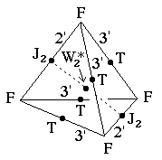
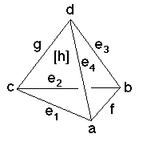

215
215
 217
217 Orbifold Atlas Home Page
Orbifold Atlas Home Page
 Crystallographic Topology Home Page
Crystallographic Topology Home Page
Underlying Topological Space: D3; Figure Pseudo-Symmetry (FPS): 222
Euclidean 3-Orbifold with Invariant-Lattice-Complex Letters
(left), Wyckoff Site Letters (right)
 
| FPS | Mult | Lattice Comp | Group Graph | Wyckoff Set | 2[4]Cover |
| 4-4 | F | 3'3'2' | a, b, c, d | ||
| 16-4 | F4[T]F4 | 3'2'<3'>3'2' | e1:a-c, e2:c-b, e3:b:d, e4:d-a | ||
| 24-2 | F6[J2]F6 | 3'3'<2'>2'2' | f:a-b, g:c-d | ||
| 48-1 | m | h: efg | |||
| 96 | 1 | i:h | |||
| 48-4 | F12[-]J22 | 2*=3'3'2'<1'>22 | h1:a-g, h2:b-g, h3:c-f, h4:d-f | #225(h,i) | |
| 2 | 96-2 | J24[W*2]J24 | 2*=22<1>22 | i1:f-g | #215(h) |
| 2,2 | 96-4 | T6[W*2]T6 | 2*=3'3'<1>3'3' | i2:e1-e3, i3:e2-e4 | #227(h) |
| 96-2 | m* | i4:fi1h1h2, i5:gi1h3h4 | #225(j) | ||
| Struct-Mult | Critical Points | Heegaard Surf | Wyckoff Cut |
| ZnS -2s | FF/T/T/FF | H3'2'3'2'm{1} | e1 f e3 g; e4 f e2 g |
| NaCl-1s | FF/J2/J2/FF | H3'3'3'3'm{1} | e1 e2 e3 e4 |
| FCC -4 | FFF/TT/J2/F | H3'2'3'2'2'm{1'1'} | e1 f e4 (g1) (g2), (etc. x4) |
215
217
Orbifold Atlas Home Page
Crystallographic Topology Home Page
Page last revised: